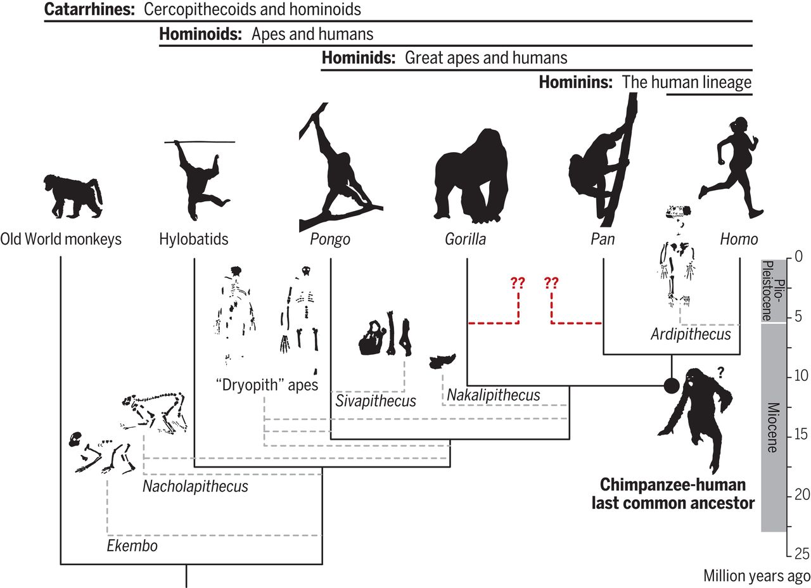
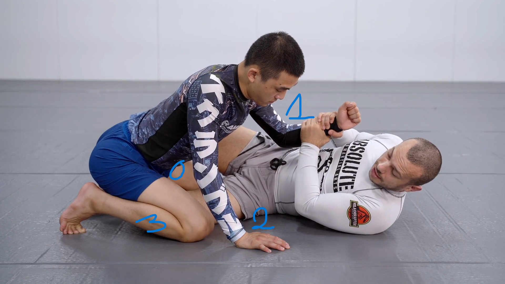
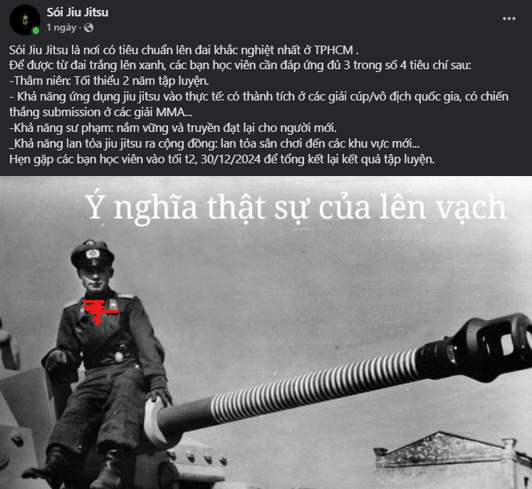
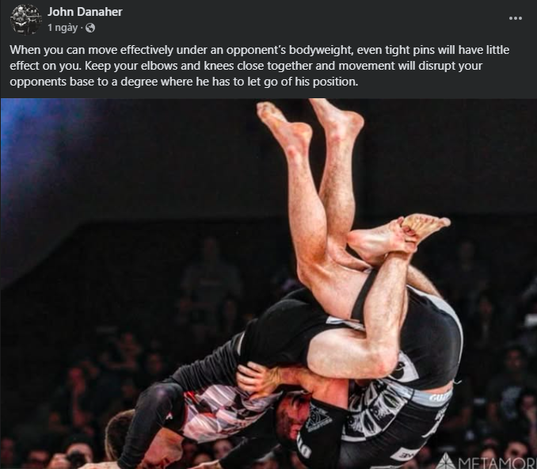
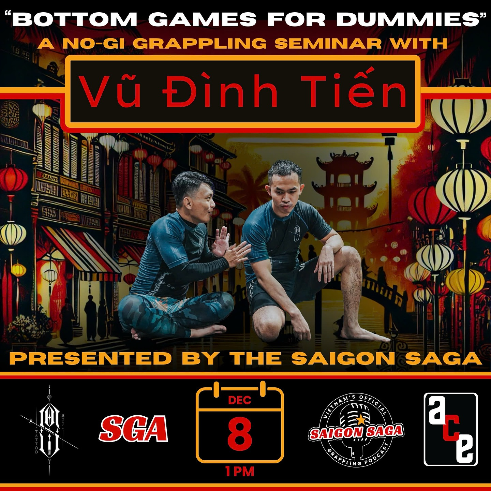
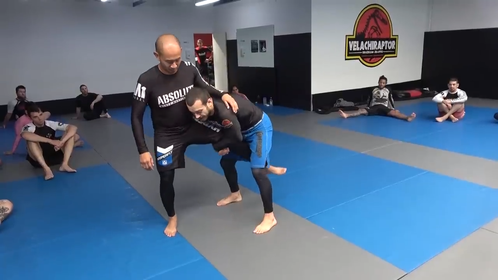
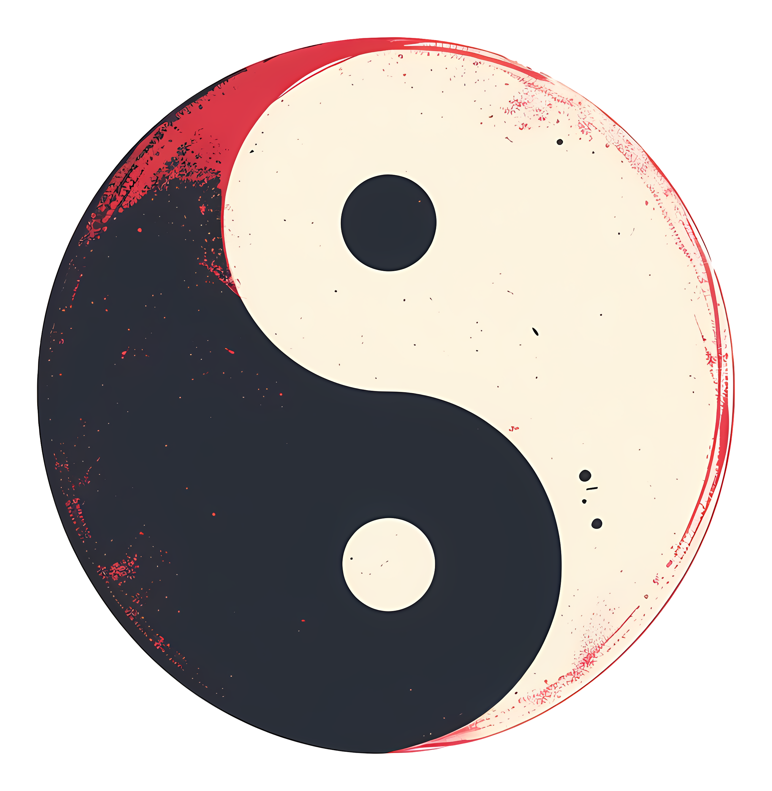
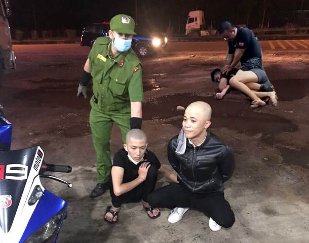
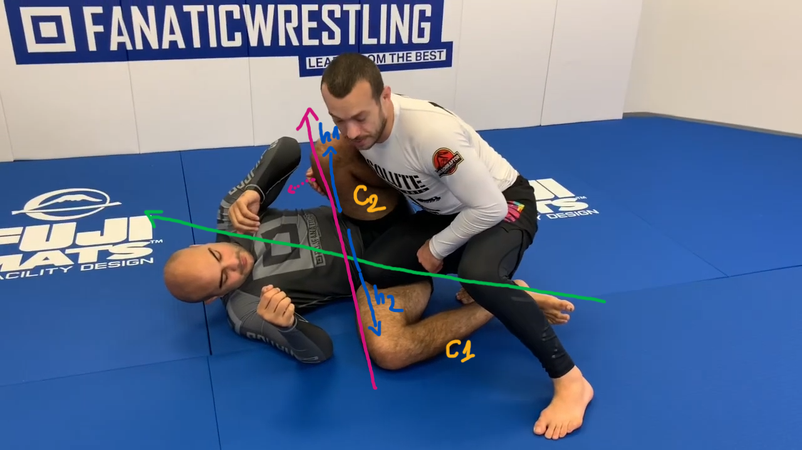

2025
February
Sau Tết quá lười, mãi tới hôm nay mình mới đi tập được buổi thứ 2 (hôm đầu lười viết 😊). Hôm nay lần đầu tiên mình được dạy một đòn leg submission ở Lò - ankle lock - đòn khóa mắt cá chân, thứ được xem là signature của Sói Jiu-jitsu.
Pipeline để đạt được vị trí này vẫn là bài học quen thuộc: single leg -> x-guard -> sweep. Tuy nhiên lần này ta không cố gắng sit up trước đối thủ để giành lấy lợi thế khi pass guard, mà setup lại vị trí single leg - ở vị trí cả 2 cùng nằm. Bây giờ có mấy điểm quan trọng cần ghi nhớ sau:
- Phải cố định được đầu gối và làm gập chân đối thủ: Như single leg, ta ở tư thế ôm gấu bông, dùng hai chân kẹp để giữ chặt đầu gối đối thủ. Thêm nữa, nếu chân của họ thẳng, phần cổ chân sẽ rất khỏe, ta cần làm gập nó;
- Dùng tay lock cổ chân của đối phương vào armpit: Siết tay vừa phải và ngả tay ra sau cho tới khi cảm nhận được gót + mu bàn chân đối thủ.
Để finish, nằm nghiêng xuống, giấu vai đi, đẩy bụng vào.
Mình thực hiện không mượt mà lắm. Sẽ cần luyện tập nhiều hơn.
Đọc thêm về Ankle Lock: https://bjjfanatics.com/blogs/news/ankle-lock-bjj. Happy training!
January
Cách đây hàng chục triệu cho tới hàng triệu năm, trong kỷ Neogene (23-2.58 mya), cụ thể là trong thời kỳ Miocene muộn và Pliocene, tổ tiên của loài người đã - lần đầu tiên - phát triển khả năng lưỡng cự - bipedalism, tức đi bằng hai chân.
Hôm nay, sau gần một năm lăn lê bò trườn lộn dưới mặt đất, mình lần đầu tiên thấy sư phụ dạy đánh đứng - what an evolution!

Là một buổi học đơn giản - chúng tôi luyện tập cách xử lí cơ bản khi bị đối thủ collar tie hoặc neck tie - một phần trong hand fighting:
- Thế tấn: cánh tay đối thủ dùng để neck tie thường ứng với chân đứng sau;
- Ta dùng tay tương ứng để grip (nghĩa là tay trái - tay trái - chúng sẽ nằm chéo khi hai người đối diện);
- Tuy nhiên không dùng lực tay để phá neck tie, thay vào đó đưa vai lên cao, backstep chữ L - pivot \(90\degree\) về sau lưng, tay grip chỉ cần giữ. Áp lực từ vai chúng ta vào cổ tay đối thủ sẽ làm việc;
- Nó tự nhiên sẽ cho ta 1 vị trí tay 2 đánh 1, kiểu figure 4, lúc đó ta chỉ cần đơn giản là sit down - on our knees, là đã có thể kéo đối thủ xuống. Một cách tự nhiên, khi chúng ta đưa tay còn lại móc vào hướng chân xa của đối thủ, ta sẽ luôn có được 1 trong các kiểm soát sau:
- Nếu chân xa ở phạm vi gần, ta có thể pick vào bắp chân và sweep;
- Nếu không móc vào được chân, ta có khả năng sẽ móc được vào armpit. Lúc này với việc circle 2 tay, ta có thể kiểm soát cả hai tay đối phương. Vì chỉ còn trụ bằng hai chân, đối thủ sẽ dễ bị kéo ngã về phía trước. Di chuyển linh hoạt và lấy side control;
- Nếu hụt mất armpit, ta có thể móc vào cổ đối phương, kết nối hai tay và circle, ta có được anaconda grip, ngả người về phía cánh tay khi khống chế - mất trụ để finish;
- Nếu đối thủ đưa 1 chân lại gần, vào giữa central line để rút ngắn khoảng cách, ta có thể linh hoạt sử dụng đòn gạt chân tương tự Osoto Gari (大外刈) trong Judo để takedown đối phương.
Để kết thúc được đối thủ bằng anaconda hoặc d’arce choke, ta cần đầu của đối thủ nằm gọn trước ngực (đỉnh đầu vào chấn thủy). Việc tập luyện tăng dung tích phổi: đưa hết không khí ra ngoài khi setup đòn, và bơm không khí vào trong khi siết sẽ mang lại hiệu quả lớn.
Trust me bro, tôi đã thử bị sf siết, hoàn toàn không dùng lực tay. Oss!
Một buổi tập chiều thứ 7, đầu năm mới 2025, và rất nhiều thứ thú vị từ Head Coach.
Intro
Trong hai tuần vừa rồi chúng ta đã học và tập luyện một phương thức tấn công rất đặc trưng của lò Sói, từ vị trí half guard - nhện dệt lưới - i.e. cố gắng đan các đường chéo lên các bộ phận cơ thể của đối phương. Nếu thực hiện đúng, ta có thể đạt được một vị trí mà ở đó chân half guard ngoài có thể hook vào chân của đối phương (gần giống lockdown), và control được tay cùng bên với figure-4-shape grip.
Từ vị trí này - với bàn chân bị kéo lên không, đối thủ đã rất khó có thể thoát ra được, vì bất cứ lúc nào họ muốn generate force để thoát ra, họ sẽ luôn đưa một chi cơ thể vào phạm vi tấn công. Trong hình minh họa với 0 là chân bị kiểm soát, 1,2,3 lần lượt là 2 tay và chân theo thứ tự xa dần trong phạm vi tấn công: khi đối thủ muốn gỡ tay 1 thì bắt buộc phải đưa tay 2 lại gần để tạo lực. And so on, đối thủ sẽ luôn tự đưa mình vào một vị trí bất lợi khác.

Vậy muốn thoát ra, họ sẽ muốn gỡ được chân 0 ra khỏi vị trí bị hook, và đứng dậy - điều này khó nhưng là có thể làm được. Hôm tay ta sẽ học cách ứng xử với trước hợp này!
Transitioning to shin-to-shin when losing half guard
Điều tiên quyết và quan trọng nhất trong trường hợp này, chíng là chuyển chân bên ngoài - sau khi đã mất hook - vào vị trí shin-to-shin, đồng thời ngồi dậy dán body vào chân đối thủ. Chúng ta sẽ muốn giữ wrist grip khi còn có thể và lợi dụng lực kéo của đối phương để ngồi dậy, hoặc pin tay của đối thủ bằng grip đó xuống sàn và ngồi dậy bằng khuỷu tay. Chiếc chân bên trong vẫn nên cố gắng hook vào sau bắp chân - đầu gối, khi ta ngồi dậy có thể chuyển sang hook/wedge chân đối diện.
Bây giờ có hai khả năng xảy ra:
- Đối thủ có thể đứng gần như thẳng (chân rộng bằng vai, khuỵu gối) hoặc (đứng) thẳng;
- Đối thủ đứng nhưng base chân tay rộng ra.
Cái gì cũng có sự trade off, với trường hợp một, chân của họ sẽ nằm trong phạm vi tấn công của chúng ta và rất dễ để take down, nhưng ta sẽ nói về khả năng đó sau. Với trường hợp 2, khi đối thủ base càng rộng, sẽ tạo ra một tình thế mà đầu của ta nằm cao hơn lưng đối thủ, từ đây:
- Ta có thể xoay trục cơ thể từ vị trí shin-to-shin với body stick vào chân, chúng ta đeo thêm một cục tạ lên cái chân bị đè. Lưu ý rằng chỉ phân bổ khối lượng cơ thể vào từ dưới vùng xương chậu. Từ đây ta có thể sweep và lấy side control;
- Thứ 2, với nhận định rằng cái chân còn lại không có nhiều giá trị trong việc hook/wedge chân còn lại của đối thủ - vốn có không gian hoạt động rất rộng, ta có thể dùng nó như một cánh tay đà để roll xuống giữa hai chân đối thủ. Nhấc bàn chân bị shin-to-shin lên, với việc kiểm soát đầu gối tương ứng, cũng có thể đưa ta về vị trí side control sau khi sweep.
Outtro
Giờ hãy nói về trường hợp 1 ở trên:
- Nếu đối thủ đứng bằng hai chân: double legs take down;
- Nếu đối thủ cố gắng đưa chân còn lại ra xa: ankle pick -> single legs take down;
- Ta có thể kết hợp với việc sự dụng đầu gối ở vị trí shin-to-shin, đẩy vào phía sau đầu gối đối phương, đưa no cong về phía trước. Đồng thời hai ta bốc và xoắn double legs - làm họ ngã về sau. 🚫 Tuy nhiên điều này không được thực hành tại lò, vì có nguy cơ gây chấn thương gối rất cao.
Happy training. Oss!
2024
December
Hôm nay, sau tròn 10 tháng tập luyện (02/28/2024 - 12/30/2024), mình đã nhận được vạch đai trắng đầu tiên.
Mật độ tập luyện trung bình là khoảng 3 buổi/tuần, không tham gia thi đấu, tăng nhẹ khoảng 2,3 kg, có phát triển một chút cơ bắp, và một số bông tai súp lơ (cauliflower ear) đầu tiên.
Về mặt kỹ thuật, đã xây dựng được ý thức và khả năng thực hiện các đòn đánh dưới một áp lực trung bình; khi áp lực tăng lên, ý thức kỹ thuật dần mất đi và thay vào đó là các hành vi bản năng. Về mặt chiến thuật, chỉ đang có sơ khai hình dung về cách đánh cho một vị trí cụ thể, trong khoảng 10 mấy giây tiếp theo; chưa có game plan, sẽ cần suy nghĩ và xây dựng trong năm thứ 2 tập luyện.
Cái mình được đánh giá tốt là khả năng absorb technique, và truyền đạt lại cho người khác (các bạn mới vào).
Cảm ơn sư phụ Tiến Sói, các anh/em đứng lớp Thông, Huân, Nhật, Hùng, cùng các thành viên Sói Jiu-jitsu. Oss!

Trong khoản gần 2 tháng thực hiện các ghi chú vừa rồi, rất rất nhiều các tiểu tiết kỹ thuật được truyền đạt. Thường xuyên thực hành, chăm chỉ tập luyện gần như là cách duy nhất để ghi nhớ các kỹ thuật, tư duy đó vào cơ bắp của chúng ta. Tuy nhiên, một bổ trợ cũng thường xuyên được sử dụng, chính là đơn giản hóa những nguyên tắc cốt lõi nhất thành các câu lệnh có điều kiện đơn giản, nén chúng lại vừa đủ để cache vào short term memory của chúng ta.
Vì thế mà ở lò Sói thường xuất hiện các cụm từ như: “xem đồng hồ”, “nghe điện thoại”, “ôm trán”, hay “nếu nhìn thấy …, thì …”. Một trong số đó là: “nếu nhìn thấy khuỷu tay và cổ tay đối phương ở trước mặt - ngang hai mắt, không đánh nó là một điều tội lỗi”.
Hai tuần nay tập luyện vẫn là bài đánh chân từ bottom + kiểm soát và tiến tới kimura một cách có hiệu quả. Chân chính là chi đầu tiên engage với đối thủ, kiểm soát được chân (cố định được một khớp như đầu gối, hay làm xoắn nó) là mục tiêu đầu tiên cần đạt được để làm đối thủ bận rộn, kiếm thêm thời gian và bảo toàn thể lực.
Đánh kimura trong thực tế cũng sẽ không đơn giản như chỉ cần chồm lên, hai tay kết nối được thành cái vì kèo (4-shape - thứ có thể dễ dàng quan sát trên phần mái tôn của nhà thi đấu Nguyễn Tri Phương) là xong. Mà là quá trình từ grip đúng cách (vào cổ tay), kiểm soát được đầu kia của trục tay (vai), tạo áp lực vào khuỷu tay (giống như armbar), khiến cho đối thủ đưa tay cho chúng ta kimura trong lúc scramble. Luôn tạo một áp lực nhất định, bắt đối thủ chọn 1 trong hai phương án đều bất lợi, dần dà sẽ làm cho họ đưa tới cho ta một vị trí có lợi hơn.
Chúng ta không dùng sức để lấy được một vị trí thuận lợi, chúng ta tạo áp lực đúng cách để khiến đối thủ đưa vị trí đó cho chúng ta - Vũ Đình Tiến (đại ý).
Nghe giống như một mental model mà mình từng đọc qua - dilemma.
Oss! Ghi chú được ghi lại sau 2 ngày tập - ngày 25, đúng là:
Thời gian không ngừng, chỉ có con người mới
lườingừng - Thong Le.
After 9 months of training, I finally had my 2nd open mat at Soi Jiu-jitsu :). Rolling with the real heavy hitters at the first time made me think that this open mat not suit for me. But anw I had a free Sunday morning this week so I decided to try again.
Did better this time, rolled with a skillful 7xKG and had to bear his weight most of the time but still I held out until the end. I just rolled for one round, since I’ve been practicing for 4 days in a row, and have got a shoulder injury. Let’s improve next time!

Theme of the class this week is to master the Americana.
The head coach continued with the final bonus of how to do Americana the right way at his Seminar “Bottom game for dummy” at the ACE community hosted by Saigon Saga, teaching Americana in various positions.
Remember weekend’s lesson of bottom game, you’ll have good position for a sweep or a triangle. But before jump into finishing triangle, let’s explore some americana/straight armbar variants. Opponent will be trying to posture up to prevent triangle choke and escape, their arm will be around your hip, use your 2 hands to grip/hook into their armpits to control the distance - arms to pull, legs to push.
- If their inside elbows expose to your eyes, you can go for a straight armbar;
- If not, you can see their outside elbow, go hook, pull them out of the body and overhook -> kimura;
- If they move elbow to inside body, you can bury their elbows to our pelvis, using the thrust to create a fulcrum, keep pushing and rotating their hands to outside. This is a variant of Americana;
- Finally, none of above work, you can go a triangle choke, but to concrete the technique: you can creat 2 layer circle that threat the opponent’s neck. The first one is traditional leg position (1 arm and the neck), the second one is underhook the remaining arm, circle over the head. The choke thus would be more efficient!
I have some more rounds rolling with Gi/Kimono today with anh Tu & anh Thong, pretty cool (but literally hot in the Gi). I’ve taught some basics of gi fighting: how to grip properly and legally, how to generating force, esp. in a pulling action.
Final quote of the day:
Let’s start to think about the game plan! - Thong Le
Bottom games for dummies

Let’s forget everything about BJJ before this class.
Phase 1: getting contact
- Control the lower body of the opponent: 6 control points, block with feet or hook with instep;
- When 1 leg of the opponent pass your hip, hands to engage;
- End up with closed guard or half guard or k-guard.
Phase 2: contacting
When contacting, we want to control at least 1 leg & 1 arm (upper body), both in 1 side is preferable - like hinge shaft of the door. So that we can flip it to sweep.
There are many ways to control upper body, as said in notes before. How we attack the leg is also mentioned in this journal.
Phase 3: loosing control & transitioning
Opponent certainly does not want to be passive in the game, they want to post up/scramble/initiate frame, etc … to get out or our control. The matter here is we should be aware of this and prepared. We can exploit the opponent’s traction force to sit up, creating a shin to shin position or transitioning to leg attack like k-guard.
The keys in bottom game I thinks is distance control, tracking their movement, keeping disturbing their comfort, get proper wedge, hook.
Q&A
Q1 - Huan: If the opponent hides their heels, how can we hook in and flare it?
A - Soi: No one can dominate in every direction, when they hide feet in their butts, they can be easily pushed back. We can sit up and push.
Q2 - Stranger: how do we not let opponents hand-cross our heads when they try to pass our guard?
A - Soi: Put your palm on you forehead - just like you’re striking - creating a frame. The opponent’s hand just can only slip through it. Their armpit reveals and you’ll have chance to underhook with remaining arm, and even finish with straight arm lock.
Bonus - Americana the right way:
- Use your wrist as a blocking wedge instead of hand grip. It will leverage the lock and create discomfort for the opponent.
- We dont want to push their elbow up, because:
- as long we push it up, we loose the pressure we made in chest to chest;
- elbow up is a natural movement to ease the pressure we made. so we need to pin the elbow on the mat - use your head, with the wedging above you’ll finish the Americana.
Happy learning!
Buổi học được dẫn dắt bởi Huân, tiếp nối chủ đề hôm trước từ bottom - half guard -> under hook tay -> hook lưng -> sweep.
Nhưng hôm nay tiếp cận theo hướng ngược lại -> “lao vào lòng” đối thủ và hook sâu xuống chân/Deep Half.
Từ đây có thể mở ra nhiều cơ hội tấn công, ít nhất hai hướng sweep tùy theo body movement của đối thủ.
November
Ta phải đánh đổi giữa sự linh hoạt (flexibility) của bản thân và áp lực (pressure) lên người đối thủ.
Hôm nay tập hand fighting và làm quen kiểm soát tay từ butterfly guard (bottom), hai thứ quan trọng cần nhớ vẫn là:
- Tác dụng lực vào tay theo trục vuông góc với mắt - cơ thể hai đấu thủ;
- Cố gắng đưa khuỷu tay ra xa.
Arm lock có thể dùng là outside overhook với 4-shape hand grip, inside overhook (mình hiểu outside nghĩa là body mình nằm ngoài trục cơ thể đối phương và ngược lại cho inside), hoặc underhook với cách-khóa-giống-rnc. Hãy học các linh hoạt switch giữa các kiểu control này.
Cuối cùng thì 1 dạng omoplata với hai-tay-grip-vào-nhau. Việc hai tay luân phiên kiểm soát được phần vai + tay của đối phương (luôn có áp lực) trước khi đạt được grip là thứ thú vị nhất hôm nay. Đòn này cũng có thể kết thúc bằng triangle and/or armbar.
Oss!
Hình như từ lúc ghi cái nhật ký này thì tần suất đi tập bị thưa đi thì phải =))))
Hôm này, sau một tuần về Nghệ An, mình tập lại và vẫn là bài thực hành kiểm soát khoảng cách, chuyển đổi phương án tấn công.
- Có 1 điểm mới là tại trạng thái sắp lost contact, với hand grip ta có thể áp dụng việc ngồi lên -> shin to shin -> ankle pick -> single leg takedown;
- Sf có nói thêm về cách thoát khi bị single leg takedown: cần đưa đầu của đối thủ ra khỏi centre line của mình, dùng tay đưa vào phần cổ của đối thủ để tạo không gian cho hông mình thoát ra, tay đó cũng sẽ là tay lock anaconda -> drag đối thủ xuống và chiếm lấy vị trí có lợi;
- Bonus 1 - Thong Le: triangle - armbar ở tư thế mình ở bottom / mount khác với thông thường, mình sẽ không lock 2 chân lại. Hãy dùng gót / heel của chân nằm dười làm blocking wedge / nêm chặn để giữ shin chân trên, rất linh động và dễ thực hiện, dễ siết;
- Bonus 2 - Huy + Thong Le: pass guard để ý tay và chân, khép tay lại. Khi pass cái tay nằm dưới của đối thủ là thứ ta cần kiểm soát. Hãy học cách dùng trọng lượng thay vì sức lực. Không move around nhiều mà đưa một chân ngay vào centre line của đối thủ.

Khẩu quyết đầu ngày:
Một đối thủ với base vững chắc, co cụm và gồng cứng sẽ ít cho ta cơ hội để thực hiện một đòn thế. Ta cần quấy rối, “làm mềm” để từ từ mở ra cơ hội tấn công / kết thúc. ———- đại ý, không phải nguyên văn từ coach
80% (số-này-được-mình-bịa-ra) thời gian của một game đấu là thời gian hai đấu thủ tìm kiếm một vị trí thuận lợi / setup được position cho các đòn thế được giảng dạy trong hầu hết các giáo trình BJJ. Việc giảng dạy kiểu technique-based rất có lợi trong các khoảnh khắc quyết định, tuy nhiên đường đi đến các khoảnh khắc đó - tức đa số thời gian thi đấu - cũng không kém phần quan trọng. Bản thân mình cũng rất loay hoay, bối rối khi học được một vài kỹ thuật khóa siết, kiểm soát nhưng thực tế không thể tiến tới được. Như mọi bài giảng khác, hôm nay head coach lại nói về cách tiếp cận để kiểm soát body đối phương, limbs motion và positioning mindset.
Tiếp tục về chủ đề control the game ở note trước, từ vị trí bottom, thầy cho ghi nhớ và làm quen các move ở hai yếu tố sau - nhằm học cách kiểm soát khoảng cách với đối thủ và có các hành động tương ứng:
- Phần thân dưới:
- khi đầu gối đối phương chạm chất, ta ưu tiên tấn công từ phía ngoài: closed guard -> ankle hook -> leg sprawl. Vì lẽ nó còn cho phép ta giữ cho đối thủ không chạy đi bằng việc móc chân giữ lại;
- khi đối phương chống chân lên, gối nhấc lên, ta mất cả năng outside hook, ta ưu tiên chuyển qua inside hook hoặc wedge;
- Phần thân trên, song song với thân dưới, ta cũng cần kết hợp giữ tay - vai - đầu của đối thủ:
- ta muốn đưa ít nhất một tay của họ khỏi được central line ra bên ngoài hoặc bên trong;
- ta muốn chỏ của họ ra xa khỏi lườn, có thể bắt đầu từ việc 2-đánh-1 vào cổ tay, kéo/đẩy nó theo phương vuông góc với body line của 2 người;
- từ đó có thể đạt được 1 grip kimura (in/out) với 4-shape, hoặc overhook/cross underhook với tay còn lại ghì đầu/cổ đối thủ xuống.
Ta cần làm quen với việc kết hợp cả tay và chân từ khoảng cách gần nhất - closed guard, tới xa nhất là hand wrist grip -> transition sang đánh chân như chuỗi tấn công đã nhắc ở note trước. Nếu làm đúng, đối thủ sẽ tiêu hao rất nhiều sức lực để thoát ra, đó là một số nguyên lý cần ghi nhớ khi ở vị trí bottom.
Tất nhiên cũng có ngoại lệ, như:
- Butterfly guard với double underhook là một inside attack khi đối thủ base hai đầu gối (tuy nhiên mình chỉ có thể dùng lực chân để nâng đối thủ lên chứ ko thể hook -> sprawl đối thủ ra được, trong MMA hoặc street fight, đối thủ có thể chỏ vào đầu nếu mình dùng đòn này);
- De la Riva cũng có thể coi là một inside (khi hông của mình nằm giữa chân). Tuy nhiên fact là chân thầy bị xoắn khi thực hiện nên lò Sói không dạy đòn này, reversed De la Riva - dễ thực hiện hơn - có thể sẽ được giảng dạy trong tương lai.

Bonus quote 2:
Trong Jiu Jitsu, mình - cũng như đối thủ - sẽ cố gắng “dán” các đường chéo lên/cắt ngang người đối phương. Càng nhiều đường chéo được tạo ta, ta càng kiểm soát đối thủ tốt hơn.
Bonus quote 3:
Mục tiêu của các bạn khi drill/roll ở lò này không phải là submit bạn tập, mà là kiểm soát họ.
Oss!
Nếu bạn có một gameplan đánh chân đủ tốt, bạn sẽ luôn chủ động trong mọi cuộc đấu.
———- Vũ Đình Tiến (không hẳn là nguyên văn, là đại ý mà mình nhớ được)
Mình nhớ trong một rolling session, Lâm Đoàn đã nói chân là thứ rất quan trọng nếu muốn kiểm soát trận đấu. Đối thủ chỉ cần ôm lấy đùi bạn từ vị trí top và giữ được nó, họ gần như sẽ chiến thắng trận đấu, ta rất khó để tiến tới một vị trí có lợi hơn khi mà chân bị khóa cứng.
Luôn có lựa chọn để đánh chân khi ta ở bottom (ví dụ half/closed guard), hôm nay Thầy cho drill mấy điểm sau:
- Khi hai đầu gối của đối phương base dưới đất (trọng tâm dồn vào đấy) -> ta có thể dùng chân hook vào phần mu cổ chân và kéo dãn chân, phá cái base đó đi;
- Phản ứng tự nhiên là họ sẽ cố xây lại base bằng cách chống chân -> ta có thể hook vào phần trong đùi, hoặc wedge (nêm chặn) vào hông của đối thủ;
- Trong các tình huống trên, hãy luôn cố gắng kiểm soát phần trên bằng tay: có thể là over hook + ghì đầu đối thủ, có thể là under hook tay nghịch, over hook với 4-shape, thậm chí tệ nhất là wrist grip. Hãy học cách kết hợp tay và các hook chân để kiểm soát cơ thể đối phương;
- Rồi giờ hãy để ý, nếu ta thực hiện được điều 3, vị trí đối phương sẽ luôn trong tầm tấn công. Đặc biệt, khi stand up, chân của đối phương sẽ luôn expose để ta thực hiện 1 đòn grip chân;
- Như vậy ta có thể tạo ra một chuỗi tấn công: Gối chạm đất -> hook chân sprawl ra -> hook đùi trong hoặc wedge vào hip -> đối phương stand up -> triển khai single leg X, X-guard sweep, K-guard (đánh được triangle, omoplata, hay reversed closed guard) -> nếu đối phương có thể thoát được, khả năng cao gối của đối phương sẽ lại chạm đất, ta lại bắt đầu lại.
Oss!

Hôm nay mình học pass guard từ một vị trí open - cụ thể là half guard - hoặc tương tự thế, chúng ta thường tiếp cận bằng cách đưa một chân vào vùng hai chân của đối thủ.
Cần ghi nhớ:
- Khi guard mở, hai chân của đối phương nâng lên defense sẽ làm giảm tính linh hoạt, giờ họ chỉ di chuyển bằng hông;
- Ngay cả khi set up được guard, việc khống chế sao cho bàn chân của đối phương bị nhấc lên cũng sẽ hạn chế khả năng dùng lực chân của họ;
- Chúng ta sẽ cần pin được 1 đầu gối (như hình, của chân
c1), và kiểm soát tay nằm chéo chiếc chân này, khống chế cơ thể của đối phương bằng một đường chéo (màu xanh lá như hình).
Tất nhiên chân c2 của họ sẽ shield lại ngăn cản. Chúng ta có thể tấn công theo hướng này (đường xanh lá) - đùng đầu và lườn hook/đẩy vào dưới cánh tay - sẽ tiêu hao rất nhiều sức lực, và cũng nên cẩn thận việc bị neck crank. Trong quá trình đó ta vẫn cần kiểm soát chân c1, cố gắng gạt chân c2 ra.
Hoặc chúng ta có thể lựa chọn tấn công theo đường màu tím - ngang thân. Ta cần làm được:
- Kiểm soát chân
c1bằng hai chân của mình, cố gắng nâng bàn chân đó lên khỏi mặt đất - có thể bằng cách móc hai chân mình lại với nhau, sau đó duỗi ra trong khi đang ngồi lên chiếc gối đó. Việc này cũng sẽ hạn chế việc chânc2khi bị gỡ shield sẽ quay sang tấn công chân trong của mình; - Cố định hông của đối thủ, do ta đã pin được chân
c1, thế nên nếu kiểm soát được chânc2tự nhiên hông của họ sẽ không di chuyển được. Đầu tiên hãy xoay trục cơ thể về đường tím, sau đó ta có hai hướng:- a) Đẩy chân
c2- phần gối về hướngh1, hãy dùng khối lượng cơ thể bằng cách kết hợp việc duỗi chân ra. Đối phương sẽ tiêu hao nhiều sức lực hơn và khi pass được đầu gốic2, ta có thể pivot/xoay trục về đường xanh lá để đánh tay; - b) Đẩy chân
c2- phần gối về hướngh2, ta có thể hook tay phải vào sau chiếc gối này và đấm tay xuống đất (trước bụng đối phương) - lúc này hông của họ cũng không di chuyển được. Sau khi đè được gốic2xuống, ta có thể:- i) pass kiểu knee slice về phía trước; hoặc
- ii) duỗi người, thẳng chân, di chuyển bằng mũi ngón chân để pass về phía sau - giữ cho trọng lượng cơ thể vẫn áp lực lên người đối thủ.
- a) Đẩy chân
Bonus: Đòn đánh 2.b.ii có thể kết thúc bằng outside heel hook, khi mà chân c2 đã ở trong hông, tay phải mình cũng sẽ đang - một cách tự nhiên - giữ lấy nó.
Nói tóm lại, các tư duy cần ghi nhớ sau buổi học này:
Không nên dùng sức mà nên dựa nhiều vào trọng lượng cơ thể;
Không tấn công được theo hướng này thì nên pivot ra hướng khác, không ai có thể mạnh trên mọi hướng (– said Tiến Sói 🐺);
Hông / hip là một phần quan trọng trong việc trực tiếp maintain posture, gián tiếp ảnh hưởng tới khả năng trụ chân để maintain base, cũng như sự tự do của tay chân để maintain structure, ba yếu tố trong alignment của bạn 👊.

Kết thúc, một buổi chiều quá nóng, may có ly nước mía!